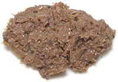

|
Thai Shrimp Paste - NorthernThailand - Northern - Kapi Kung | ||||
| Makes: Effort: Sched: DoAhead: |
1/4 cup * 12 min Yes |
Northern Thai Shrimp Paste is different from that of Central Thailand, and not available in North America. This fake-up is suggested by Andy Ricker, who is very fussy about taste accuracy. | |||
|
|
2/3 2 |
c t |
Saeujeot (1) Kapi (2) |
Make: - (12 min)
|